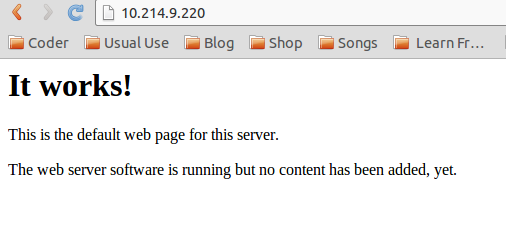
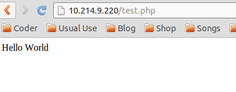

主要记下指令：
To install Apache and PHP, execute the following commands:
sudo apt-get install apache2 php5 libapache2-mod-php5
If you get an installation error, run:
sudo groupadd www-data
sudo usermod -g www-data www-data
Now restart the service:
sudo service apache2 restart
Now enter the IP address of your Raspberry Pi into your web browser, and you should see a simple page that says "It Works!"

To install MySQL, install a few packages with the following command:
sudo apt-get install mysql-server mysql-client php5-mysql
然后是配置Apache
配置文件位置和一般linux不同，不是在/etc/httpd/conf/httpd.conf，而是在/etc/apache2/下，并分成了几个文件：ports.conf, apache2.conf,/conf.d/下的文件，主要是配置端口什么的。具体看以后的需求。
测试PHP
http://10.214.9.220/test.php
